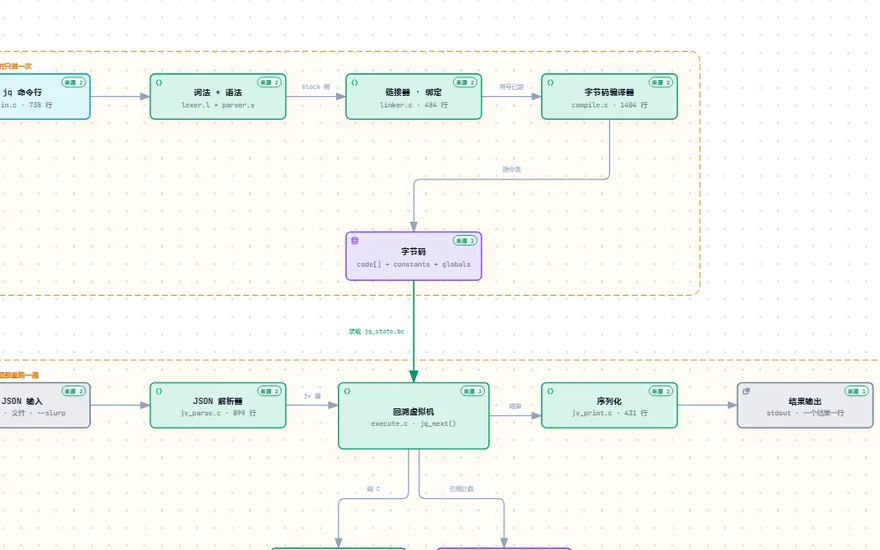
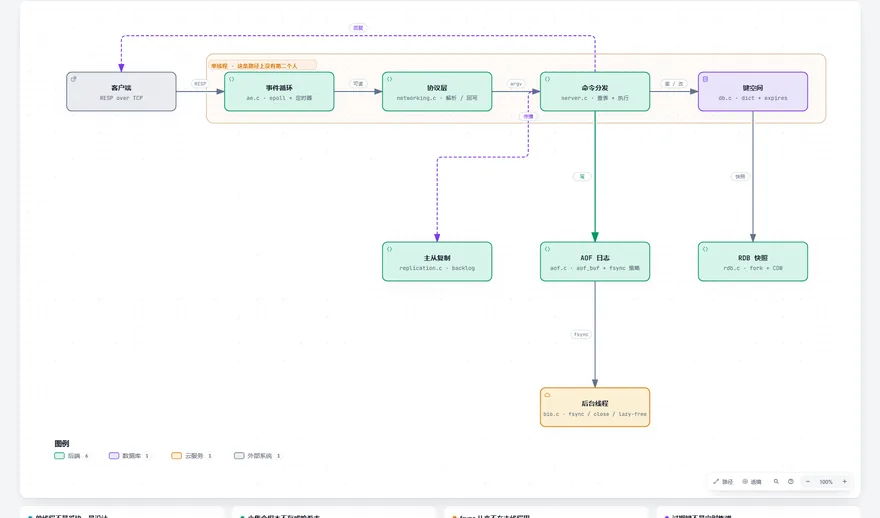

语言与运行时 2
Language Runtimes · 一个请求进来，一行代码下去，机器上发生了什么

jqjqlang/jq
jq turns a filter into 42 bytecode instructions and runs them on a VM that can rewind — that is how .[] yields several values.

Redisredis/redis
Redis executes every command on a single thread, so nothing needs a lock; the bottleneck is the network round trip, not the CPU.